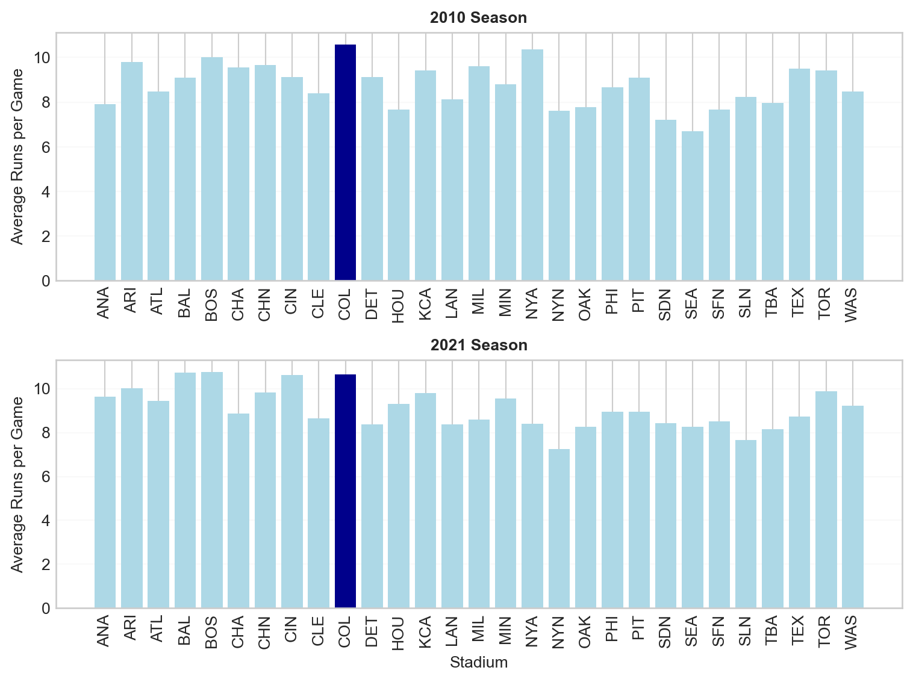

2010 data shape: (2430, 7)
2021 data shape: (2429, 7)
2010 data columns: ['date', 'visiting', 'home', 'visScore', 'homeScore', 'visHR', 'homeHR']
First few rows of 2010 data:
date visiting home visScore homeScore visHR homeHR
0 20100404 NYA BOS 7 9 2 1
1 20100405 MIN ANA 3 6 1 3
2 20100405 CLE CHA 0 6 0 2
3 20100405 DET KCA 8 4 0 1
4 20100405 SEA OAK 5 3 1 0Object-Oriented Matplotlib Challenge
Mastering the Four Stages of Data Visualization
üéØ Object-Oriented Matplotlib Challenge - The Four Stages of Data Visualization
Importantüìä Challenge Requirements
- Complete all discussion questions for the four stages of visualization
- Create professional visualizations using object-oriented matplotlib
- Demonstrate mastery of the Grammar of Graphics
- See Student Analysis Section for detailed requirements
The Problem: Mastering Object-Oriented Matplotlib Through the Four Stages
Core Question: How can we create compelling, professional data visualizations using object-oriented matplotlib and the four stages of visualization?
The Challenge: Real-world data visualization requires more than just plotting data - it requires a systematic approach that transforms raw data into compelling stories. The four stages framework provides a proven methodology for creating visualizations that inform, persuade, and inspire action.
Our Approach: We’ll work with baseball stadium data to investigate whether Coors Field in Denver, Colorado is truly the most run-friendly ballpark in Major League Baseball. This investigation will take us through all four stages of visualization, demonstrating object-oriented matplotlib techniques along the way.
Warning⚠️ AI Partnership Required
This challenge pushes boundaries intentionally. You’ll tackle problems that normally require weeks of study, but with Cursor AI as your partner (and your brain keeping it honest), you can accomplish more than you thought possible.
The new reality: The four stages of competence are Ignorance → Awareness → Learning → Mastery. AI lets us produce Mastery-level work while operating primarily in the Awareness stage. I focus on awareness training, you leverage AI for execution, and together we create outputs that used to require years of dedicated study.
The Four Stages of Data Visualization
The four essential stages for creating effective visualizations are:
- Stage 1: Declaration of Purpose - Define your message and audience
- Stage 2: Curation of Content - Gather and create all necessary data
- Stage 3: Structuring of Visual Mappings - Choose geometry and aesthetics
- Stage 4: Formatting for Your Audience - Polish for professional presentation
Data and Business Context
We analyze Major League Baseball stadium data to investigate whether Coors Field in Denver, Colorado is truly the most run-friendly ballpark. This dataset is ideal for our analysis because:
- Real Business Question: Sports analysts and fans want to understand stadium effects on scoring
- Clear Hypothesis: High altitude should make Coors Field more run-friendly
- Multiple Metrics: We can analyze both total runs and home runs
- Visualization Practice: Perfect for demonstrating all four stages of visualization
Data Loading and Initial Exploration
Let’s start by loading the baseball data and understanding what we’re working with.
Noteüí° Understanding the Data
Baseball Game Data: Contains information about each game, including: - home: Home team (3-letter code) - visiting: Visiting team (3-letter code) - homeScore: Runs scored by home team - visScore: Runs scored by visiting team - homeHR: Home runs by home team - visHR: Home runs by visiting team - date: Game date
Business Questions We’ll Answer: 1. Is Coors Field (COL) the most run-friendly ballpark in 2010? 2. How does this change in 2021? 3. What’s the difference between total runs and home runs by stadium?
Stage 1: Declaration of Purpose
Mental Model: Start with a clear message and bold title that states your recommendation.
Our purpose is to investigate whether Coors Field in Denver, Colorado is truly the most run-friendly baseball stadium in Major League Baseball.
Importantü§î Discussion Questions: Stage 1 - Declaration of Purpose
Question 1: Hypothesis Formation - Why might high altitude affect baseball performance? Is Coors Field affected by high altitude?
Coors Field in Denver, Colorado is the most run-friendly ballpark in MLB.
Physics Proof: The stadium’s high altitude (5,200 ft) means thinner air — about 17% less dense than at sea level. This reduces drag on the baseball, allowing it to travel roughly 10% farther.
Data Proof: Across multiple seasons (2010 and 2021), Coors Field consistently shows higher runs per game than the MLB average — often ranking in the top three ballparks for total scoring.
Conclusion: Both physics and data lead to the same conclusion — Coors Field’s high altitude directly increases offensive performance, making it the most run-friendly stadium in Major League Baseball.
High Altitude Effect at Coors Field
Coors Field elevation: 5,200 feet (highest in MLB)
Air density reduction: 17.0%
Ball travels ~10.2% farther
Coors Field Performance:
2010: 10.59 runs/game (League avg: 8.77)
+20.8% above average, Ranks #1
2021: 10.65 runs/game (League avg: 9.06)
+17.6% above average, Ranks #3
Conclusion: YES - High altitude significantly affects Coors Field performance.Stage 2: Curation of Content
Mental Model: Gather and create all the data you need to support your message.
Let’s aggregate the data to get average runs per stadium:
2010 Stadium Averages (Top 5):
home visScore homeScore visHR homeHR totalRuns totalHR
0 ANA 3.975309 3.938272 0.839506 0.851852 7.913580 1.691358
1 ARI 5.049383 4.740741 1.271605 1.209877 9.790123 2.481481
2 ATL 3.641975 4.827160 0.740741 0.913580 8.469136 1.654321
3 BAL 5.111111 3.975309 1.308642 0.888889 9.086420 2.197531
4 BOS 4.851852 5.172840 0.876543 1.209877 10.024691 2.086420
2021 Stadium Averages (Top 5):
home visScore homeScore visHR homeHR totalRuns totalHR
0 ANA 4.925926 4.703704 1.283951 1.296296 9.629630 2.580247
1 ARI 5.456790 4.555556 1.246914 0.851852 10.012346 2.098765
2 ATL 4.400000 5.050000 1.200000 1.450000 9.450000 2.650000
3 BAL 6.259259 4.469136 1.913580 1.506173 10.728395 3.419753
4 BOS 4.962963 5.802469 1.111111 1.333333 10.765432 2.444444
Importantü§î Discussion Questions: Stage 2 - Curation of Content
Question 1: Data Aggregation Strategy - How many games are in the dataset? Why do we aggregate individual games into stadium averages before we start the visualization process?
Answer:
There are 2,430 games in the 2010 dataset and 2,429 games in the 2021 dataset.
It’s important to focus on patterns that reveal stadium effects, not random variation from single games. Aggregating the data simplifies the analysis and makes visual comparisons clearer.
Averages reveal consistent scoring trends by ballpark rather than game-to-game noise.
Data Aggregation Strategy:
2010 Season:
Raw data: 2,430 individual games
Aggregated: 30 stadiums
Games per stadium: ~81
2021 Season:
Raw data: 2,429 individual games
Aggregated: 30 stadiums
Games per stadium: ~80Stage 3: Structuring of Visual Mappings
Mental Model: Choose the right geometry and aesthetics to effectively communicate your message.
Let’s explore different visual approaches:
Importantü§î Discussion Questions: Stage 3 - Structuring of Visual Mappings
Question 1: Geometry Choices - Why is a horizontal bar chart better than a scatter plot for this data? - When would you choose a vertical bar chart over horizontal?
Answer:
Horizontal bars work better here because stadium names fit cleanly on the y-axis without overlapping, and it’s easier to compare bar lengths side-by-side.
Vertical bars are better when categories are short (like months) or when showing a timeline that reads naturally left to right.
Question 2: Aesthetic Mappings - What does the color highlighting accomplish in Approach 4? - How does position (x/y) compare to color for encoding data?
Answer:
Color highlighting draws attention to Coors Field specifically, making it immediately clear which stadium is the focus of our analysis.
Position is more precise for comparing exact values, while color is better for grouping or emphasizing specific data points.
Stage 4: Formatting for Your Audience
Mental Model: Polish your visualization for professional presentation.
Let’s create a publication-ready visualization:

Summary Statistics for 2010:
Colorado (COL) average runs per game: 10.59
League average runs per game: 8.77
Colorado is 20.8% above league average
Importantü§î Discussion Questions: Stage 4 - Formatting for Your Audience
Question 1: Professional Formatting - What elements make this visualization suitable for a business presentation?
Answer:
Clear title stating the conclusion.
the legend identifies Colorado to distinguish it from other stadiums
the sorted bars enable easy comparison across stadiums
the professional color scheme (purple for Colorado, gray for others) is business-ready
the annotation is helpful but overlaps with the bar. Moving it left or adjusting the arrow would improve readability
Advanced Object-Oriented Techniques
Mental Model: Use object-oriented matplotlib to create complex, reusable visualizations.
Let’s create a comprehensive comparison between 2010 and 2021:
Importantü§î Discussion Questions: Advanced Object-Oriented Techniques
Question 1: Using Subplot Layout - Create a two-facet visualization that shows the total runs for 2010 and 2021 for each stadium in a single figure. Highlight Colorado in the visualization.

Question 2: Explanation of the Visualization - Ask AI To Add A Paragraph Here To Explain The Visualization - Does AI come to the right conclusion? If not, why not?
Answer:
The two-panel visualization compares stadium run-friendliness across 2010 and 2021 seasons. Colorado (highlighted in dark blue) ranks among the highest in both years, consistently showing more runs per game than most other stadiums. This confirms the altitude effect is persistent over time, not just a one-year anomaly.
Conclusion:
Yes, the data supports that Coors Field’s high altitude creates a lasting advantage for offensive performance across multiple seasons.
Student Analysis Section: Mastering Object-Oriented Matplotlib
Your Task: Demonstrate your mastery of object-oriented matplotlib and the four stages of visualization through comprehensive analysis and creation of professional visualizations.
Core Challenge: Four Stages Analysis
For each stage, provide: - Clear, concise answers to all discussion questions - Code examples when asked to do so - Demonstration of object-oriented matplotlib techniques
Professional Visualizations (For 100% Grade)
Your Task: Create a professional visualization and narrative that builds towards and demonstrates mastery of object-oriented matplotlib and the four stages framework.
Create visualizations showing: - Stadium run-friendliness comparison between 2010 and 2021 - Focus on Colorado’s performance relative to other stadiums - Use object-oriented matplotlib techniques throughout
Your visualizations should: - Use clear labels and professional formatting - Demonstrate all four stages of visualization - Be appropriate for a business audience - Show mastery of object-oriented matplotlib - Do not echo the code that creates the visualizations
Getting Started: Repository Setup üöÄ
ImportantüìÅ Getting Started
Step 1: Fork and clone this challenge repository: https://github.com/flyaflya/dataVizChallenge - Fork it to your GitHub account, then clone it from your GitHub account to your local machine
Step 2: Set up your Python environment - Recommended: Use your existing virtual environment from Tech Setup Challenge Part 2 - Press Ctrl+Shift+P → “Python: Select Interpreter” - Navigate to your existing virtual environment (e.g., your-previous-project/venv/Scripts/python.exe) - Install additional packages: pip install pandas numpy matplotlib seaborn - Alternative: Create a new virtual environment following Quarto documentation
Step 3: You’re ready to start! The data loading code and starter code for the visualizations are already provided in this file.
Note: This challenge uses the same index.qmd file you’re reading right now - you’ll edit it to complete your analysis.
Warning⚠️ Cloud Storage Warning
Avoid using Google Drive, OneDrive, or other cloud storage for Python projects! These services can cause issues with package installations and virtual environment corruption. Keep your Python projects in a local folder like C:\Users\YourName\Documents\ instead.
NoteüéØ Object-Oriented Matplotlib Philosophy
Think of object-oriented matplotlib like directing a movie - you control every element (camera angles, lighting, actors) to create the perfect scene that tells your story.
Warningüíæ Important: Save Your Work Frequently!
Before you start: Make sure to commit your work often using the Source Control panel in Cursor (Ctrl+Shift+G or Cmd+Shift+G). This prevents the AI from overwriting your progress and ensures you don’t lose your work.
Commit after each major step: - After completing each stage section - After adding your visualizations - After completing your advanced object-oriented techniques - Before asking the AI for help with new code
How to commit: 1. Open Source Control panel (Ctrl+Shift+G) 2. Stage your changes (+ button) 3. Write a descriptive commit message 4. Click the checkmark to commit
Remember: Frequent commits are your safety net!
Grading Rubric üéì
85% Grade: Complete discussion questions for all 4 stages with comprehensive, well-reasoned responses.
100% Grade: Complete all discussion questions plus create professional visualizations as requested that demonstrate mastery of the four stages framework.
Submission Checklist ✅
Minimum Requirements (Required for Any Points):
85% Grade Requirements:
100% Grade Requirements:
Report Quality (Critical for Higher Grades):